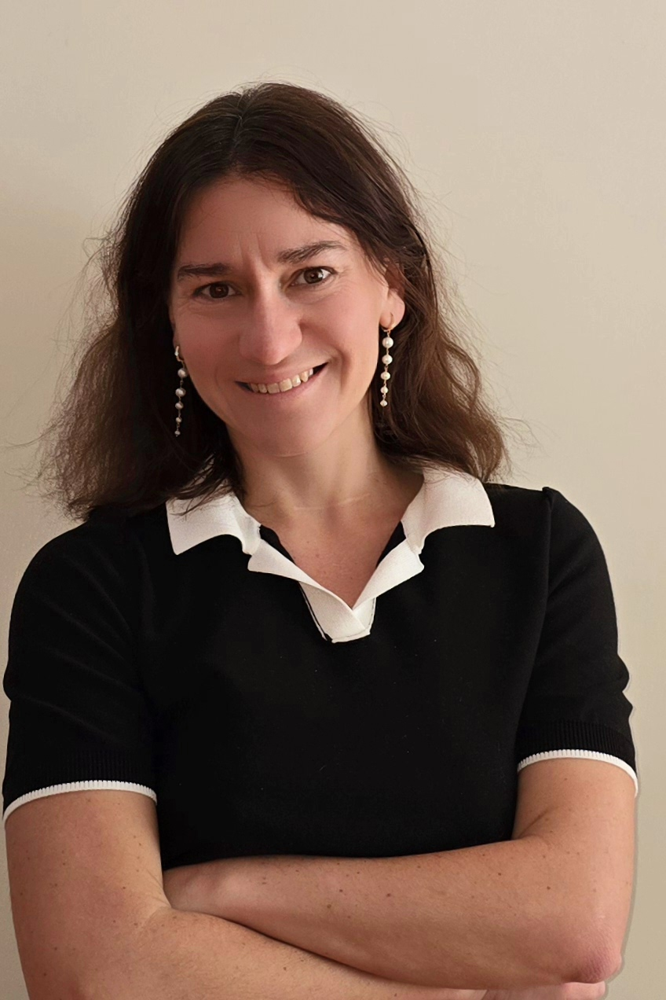
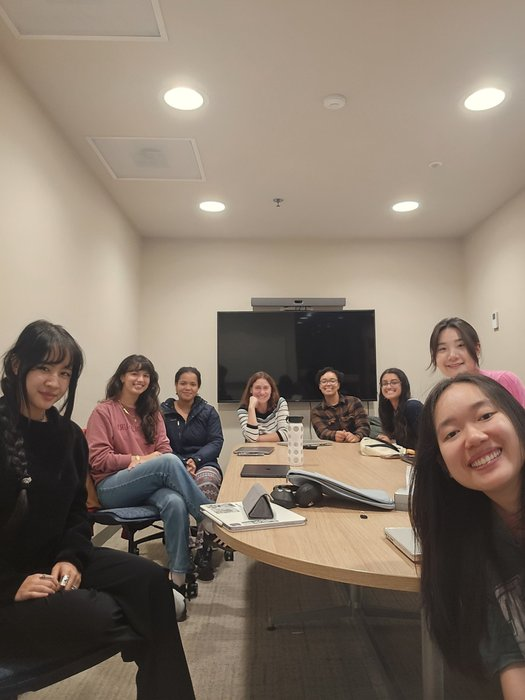
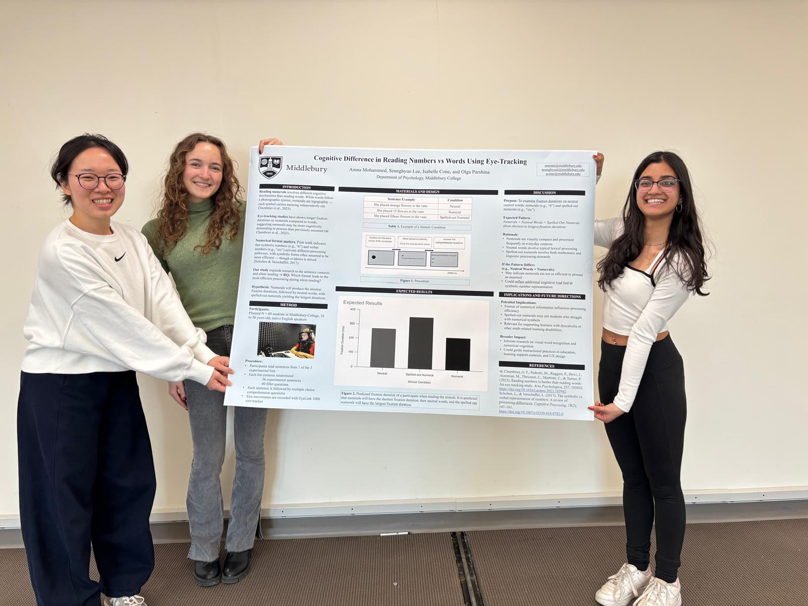
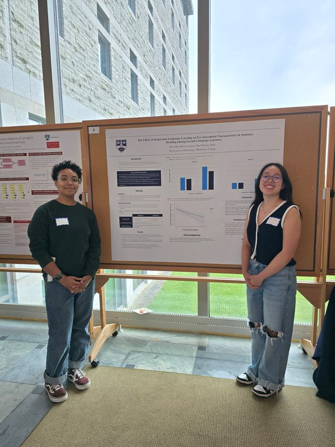
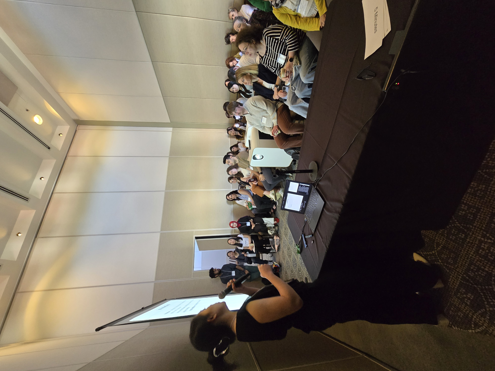
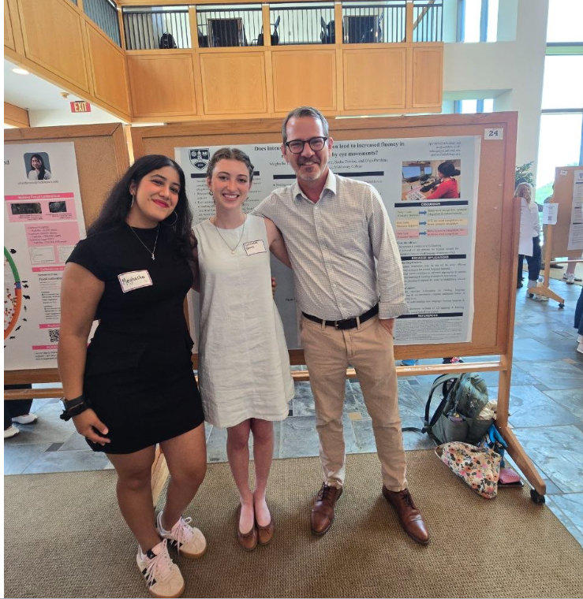
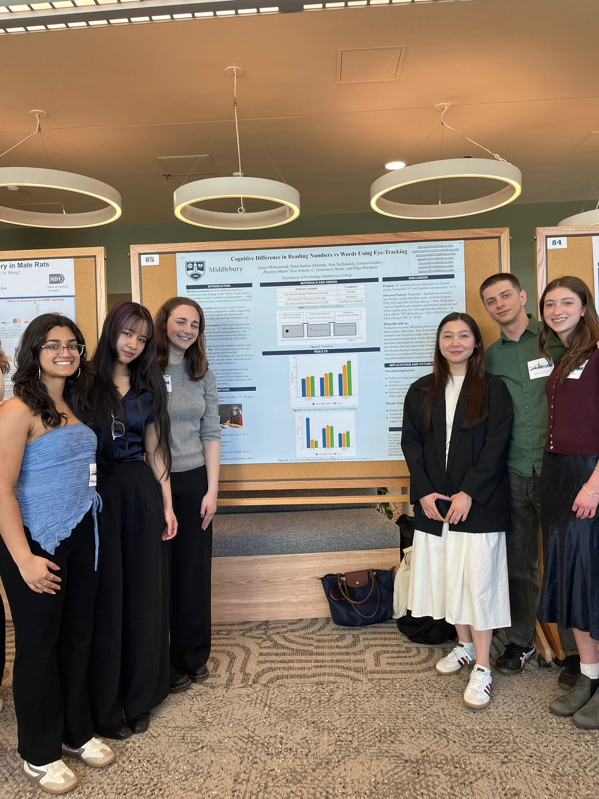
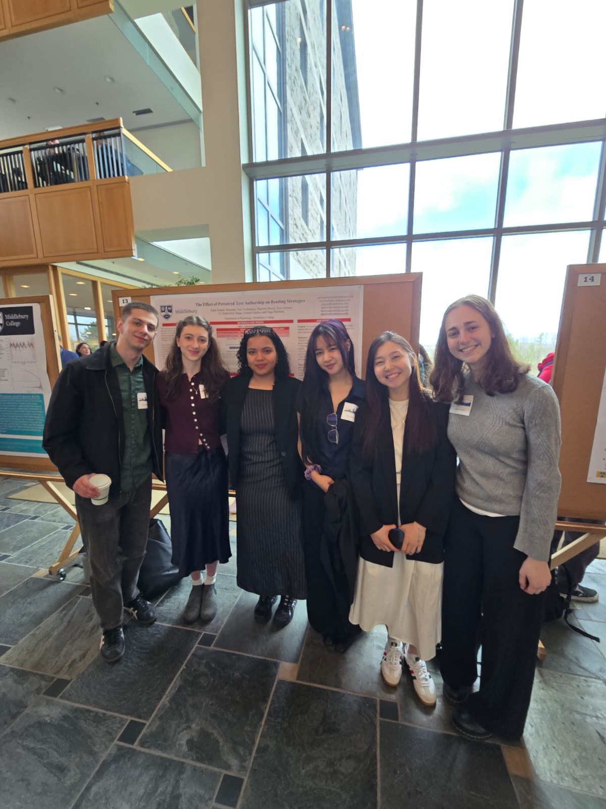
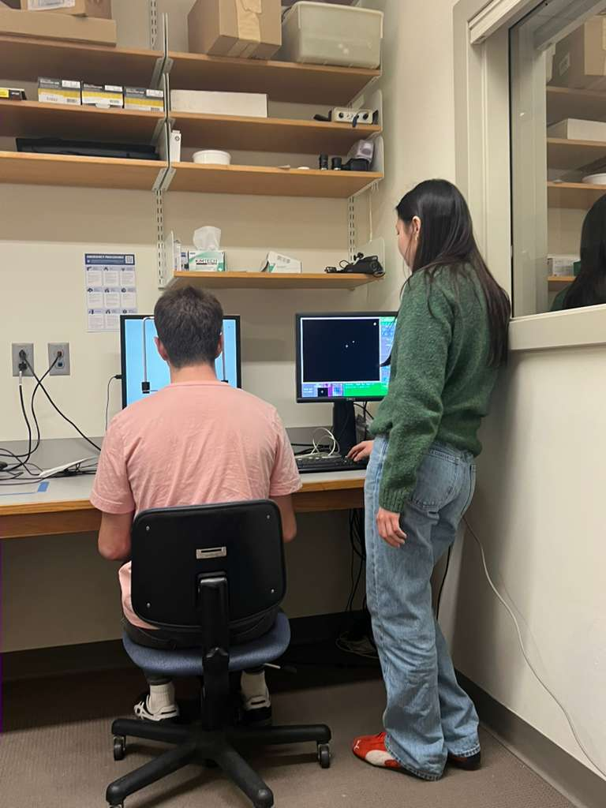
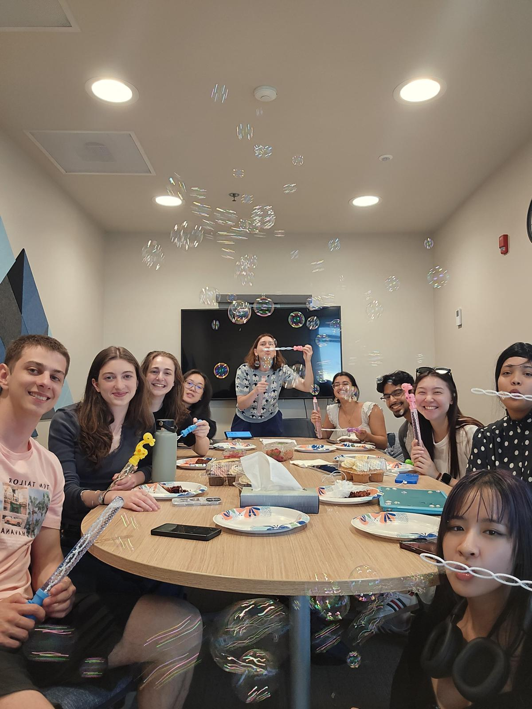

We explore the intersection of language and mind — how humans acquire, process, and produce language, and what this reveals about the nature of human cognition.
Our lab uses eye-tracking and behavioral methods to study how people read and process language — across languages, populations, and levels of proficiency.
We use eye-tracking to study the real-time dynamics of reading across languages. By recording how eyes move in reading, we examine how linguistic information interact with attention during sentence processing. This approach allows us to identify subtle differences in processing efficiency, lexical access, and integration across reader populations and language contexts.
How do bilinguals manage two languages while reading? We study language control, predictive processing, and even how bilinguals process jokes — with implications for both theory and language pedagogy.
What distinguishes typical from atypical reading development? We examine global reading patterns and scanpaths in children at risk for dyslexia, and explore phonological deficits and their neural correlates.
We study a special group of bilingual speakers, heritage speakers, individuals who grow up exposed to a minority language at home while living in a majority language environment. These speakers typically acquire two languages from early childhood, yet their linguistic experience differs in systematic ways from both monolingual speakers and late second language learners.
We are a team of faculty and undergraduate researchers at Middlebury College studying how people read and process language. Students in the lab design experiments, run eye-tracking sessions, analyze data, and present their work at national and international conferences.

Olga received her PhD in Psychology from the Graduate Center, City University of New York. She was a postdoctoral fellow at the Center for Language and Brain at HSE University and taught at the University of Delaware before joining Middlebury in 2023. Her research uses eye-tracking to study reading in bilinguals, heritage speakers, and children. She serves on the editorial board of Reading Research Quarterly.









We are always looking for new members to join our research team! Students should be responsible, committed, attentive to detail, and of course genuinely curious:)
Sign Up via Google Form →
Nestled in the Green Mountains, Middlebury College is one of New England's premier liberal arts institutions — home to world-class research in the humanities and sciences.